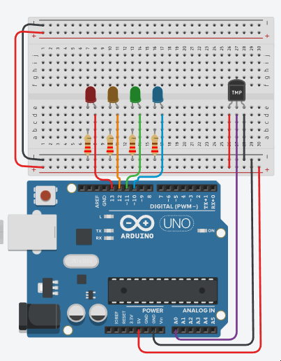

Arduino Temperature
1. Designing the circuit
-
Connect your temperature sensor (e.g., a thermistor or any analog temperature sensor) to analog pin A0.
-
Connect four LEDs (with appropriate current-limiting resistors) to digital pins 10, 11, 12, and 13 for blue, green, orange, and red, respectively.
- You can change the LEDs colour by clicking on it and change the colour
-
The resistance value can be changed on the resistors by clicking them, set them to 220
-
Upload the code to your Arduino board using the Arduino IDE.
-
Open the Serial Monitor in the Arduino IDE to view the ADC value, temperature, and voltage readings.
-
Observe how the LEDs change based on the temperature range.
-
This code provides a simple temperature monitoring system with visual LED indicators. The LEDs will change their state according to the detected temperature.

2. Define Constants and Variables
-
const int tempPin = A0: Specifies the analog pin (A0) where the temperature sensor is connected. -
const int redLED = 13, orangeLED = 12, greenLED = 11, blueLED = 10: Define the digital pins for four LEDs. -
int adcValue;,float voltage, temperature;: Variables to store the analog-to-digital converter (ADC) reading, voltage, and temperature values.
3. Setup Function:
-
Set the
pinModefortempPinasINPUTsince it's used to read the analog sensor. -
Set the
pinModeforredLED,orangeLED,greenLED, andblueLEDasOUTPUTto control the LEDs. -
Initialize the serial communication at a baud rate of 9600 to enable data logging and debugging.
4. Loop Function:
To code the loop function you need to do the following:
-
Read the analog value from
tempPinusinganalogReadand store it inadcValue. -
Calculate the temperature using a formula and store it in temperature.
-
Calculate the voltage using the ADC value and store it in
voltage. -
Call the
tempIndicatorfunction to control the LED indicators based on the temperature. -
Print the
adcValue,temperature, andvoltageto the serial monitor for monitoring. -
Add a short
delay(500)of 500 milliseconds for smoother display updates.void loop() { adcValue = analogRead(tempPin); // Read the analog value from tempPin. // Calculate temperature and voltage based on the ADC reading. temperature = ((adcValue * (5.0 / 1024 )) - 0.5) / 0.01; voltage = (5.0 / 1024) * adcValue; // Call the tempIndicator function to control LED indicators. tempIndicator(temperature); // Print ADC value, temperature, and voltage to the serial monitor. Serial.print("ADC: "); Serial.print(adcValue); Serial.print(" | Temp: "); Serial.print(temperature, 2); Serial.print(" | Voltage: "); Serial.print(voltage, 3); Serial.println("V"); delay(500); // Add a short delay for smoother display updates. }
5. tempIndicator() Function:
The tempIndicator(temperature); placed in the loop() coded out above, functionality needs to be written. Outside the loop() functions final } create a new line and reproduce the following code:
void tempIndicator(float L_temp)
{
// Control LEDs based on the temperature range.
if (L_temp <= 5.0)
{
digitalWrite(redLED, LOW);
digitalWrite(orangeLED, LOW);
digitalWrite(greenLED, LOW);
digitalWrite(blueLED, HIGH);
}
else if (L_temp > 5.0 && L_temp <= 20.0)
{
digitalWrite(redLED, LOW);
digitalWrite(orangeLED, LOW);
digitalWrite(greenLED, HIGH);
digitalWrite(blueLED, LOW);
}
else if (L_temp > 20.0 && L_temp <= 30.0)
{
digitalWrite(redLED, LOW);
digitalWrite(orangeLED, HIGH);
digitalWrite(greenLED, LOW);
digitalWrite(blueLED, LOW);
}
else if (L_temp > 30)
{
digitalWrite(redLED, HIGH);
digitalWrite(orangeLED, LOW);
digitalWrite(greenLED, LOW);
digitalWrite(blueLED, LOW);
}
}
- This function takes the calculated temperature as an argument
(L_temp). - It uses a set of conditional statements to control the LEDs based on the temperature range:
- If
L_tempis less than or equal,<=, to 5.0, it turns on the blue LED. - If
L_tempis between 5.0 and 20.0,>= && <=, it turns on the green LED. - If
L_tempis between 20.0 and 30.0,>= && <=,it turns on the orange LED. - If
L_tempis greater than 30.0,>, it turns on the red LED.
- If
-
Added four more lights to show granularity for the sensor readings
-
to program this you will need more 4 more LEDs and Resistor pairs connected to the Arduino
-
Repeart steps in the above to add more LEDs to the script, remember the varaibles must have unique names.
-
tempIndicator()needs more functionality so moreifconditions to increment in steps of 8 between 0 and 45